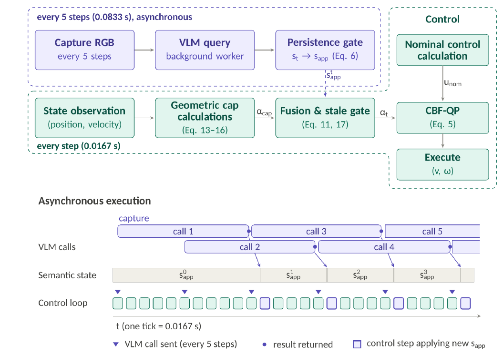
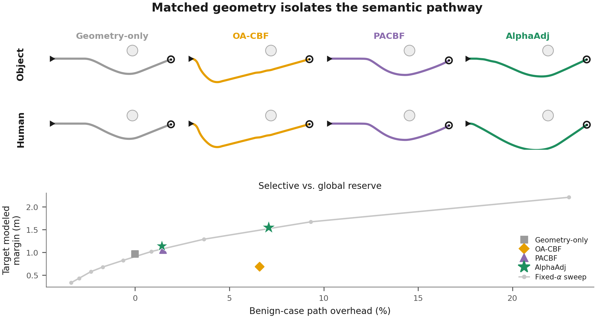
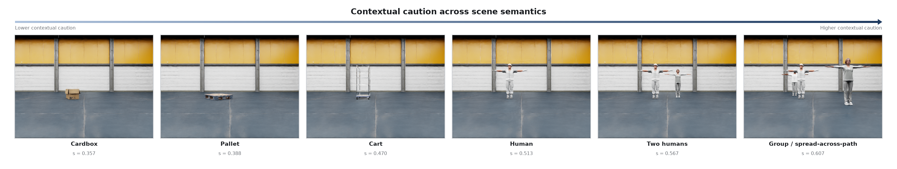
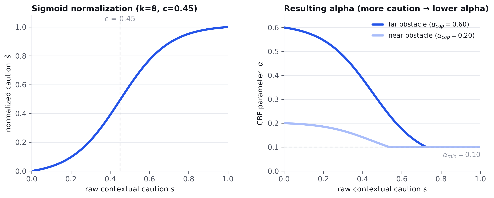

A vision-language model reads the robot's camera view and adjusts how cautious its safety controller is, without blocking the control loop.
Simulation and physical Clearpath Jackal results for AlphaAdj.
Robots operating in dynamic, unstructured environments must maintain safety without becoming unnecessarily conservative. While control barrier functions (CBFs) provide a principled mechanism for collision avoidance, their behavior is typically determined from geometric state alone and therefore cannot distinguish between semantically different situations with similar physical configurations. We present AlphaAdj, a vision-to-control navigation framework that uses egocentric RGB observations and a vision-language model (VLM) to adapt CBF conservativeness according to visual semantic context. The VLM produces a scalar contextual caution signal that dynamically modulates the CBF parameter α, while a geometry- and speed-dependent cap bounds admissible aggressiveness. To support real-time operation despite VLM latency, inference runs asynchronously with the control loop, and the semantic signal is extracted directly from token-level output probabilities rather than full autoregressive text generation. We evaluate AlphaAdj across matched-geometry, dynamic-human, and cluttered navigation scenarios, as well as on a physical Clearpath Jackal. When obstacle geometry is held fixed, AlphaAdj allocates 0.405 m more clearance to a human than to a benign object, while geometry-only and non-visual adaptive CBF baselines produce no semantic differentiation. This additional behavioral reserve improves robustness to unexpected human motion, including cluttered conditions in which all evaluated geometric baselines collide while AlphaAdj remains collision-free. The system maintains a 0.0167 s control period with 0.158 s mean VLM round-trip latency, demonstrating that semantic visual reasoning can complement geometric safety control without entering the critical control path.
AlphaAdj gives a person more clearance than a physically identical object in the same spot.
If a person starts moving after the robot has already assessed the scene, that caution carries into the avoidance instead of resetting.
The VLM runs in the background while the 60 Hz control loop keeps executing on the most recent valid estimate.

Two loops run at different rates. A slow, asynchronous branch turns a camera frame into a caution score every 5 control steps. A fast branch runs every step, computing the geometry and speed cap and fusing it with the latest caution score into α for the CBF-QP.
The caution score stays tied to whichever obstacle is currently most relevant to the CBF, even if it leaves the camera view during an avoidance maneuver.
A geometry- and speed-based cap bounds α at every step. A late or missing VLM result falls back to that cap, so it can never make the robot less safe than geometry alone.
Robot start, goal, and obstacle position stay identical. Only the visible identity of the target changes.

Four simulation runs and three physical Clearpath Jackal runs, shown at real relative timing.
Only the target's identity changes between runs. The person gets more clearance than the box.
A person crosses the robot's path at different speeds. Across part of that range the geometry-only controller collides and AlphaAdj does not.
The person starts stationary, then moves without warning once the robot is already navigating. The robot avoids contact.
Same unexpected motion, now with added clutter. This is the only method here that avoids contact.
Onboard the Jackal, the caution score changes as the camera sees different objects and people.
The Jackal gives a wider berth to a person than to a chair in the same spot.
The Jackal avoids a person crossing its path.
A single prompt produces the caution score. Several phrasings were tested before choosing this one.
“A mobile robot shares this space with whatever is visible
ahead. How strongly should the robot yield and avoid imposing on,
disturbing or crowding what it sees? 0 = no need to yield, 1 = yield
strongly. Return strict JSON only:
{"score": <one decimal between 0.00 and 1.00>}.”
AlphaAdj reads the score from the model's next-token probabilities instead of waiting for generated text. One forward pass gives a probability over the digits 0 to 9, and the score is their weighted average. This keeps the signal continuous and avoids the delay of full text generation.

The score is graded, not a binary human/object switch. It responds to broader scene context, including group size and layout.
| Prompt strategy | Intended behavior | Observed effect | Selection |
|---|---|---|---|
| General yield framing | Ask how strongly the robot should yield to whatever is visible, without naming any object class. | Broad, graded response across object types and crowd sizes, beyond a simple person or object switch. | Selected |
| Consequence framing | Ask about the consequence of a close interaction with the scene. | Reduced overall variation. Compressed the difference between people and ordinary objects. | Reduced generality |
| Sensitivity framing | Ask about how sensitive or vulnerable the scene is. | Stronger response to some non-human clutter than to people present. | Reduced person sensitivity |
| Person-explicit framing | Ask directly about proximity to people. | The sharpest person-versus-object separation of any formulation tested. | Excluded, too narrow for a general-purpose signal |
The selected framing stays general. It responds to movable equipment and groups of people, not only a fixed “human” category, and stays graded rather than acting as a hard switch.
The caution score sets α through a normalized sigmoid. Its shape and center point were chosen by comparing several alternatives.

The final mapping, k8_c45: a sigmoid with slope k = 8 centered at c = 0.45, normalized to [0, 1] and used to set α between the geometry cap and a floor of 0.10.
| Mapping | Behavior | Evaluation takeaway | Status |
|---|---|---|---|
| Shallow sigmoid (k=2) | Gradual semantic response, centered at the midpoint of the score range. | Smooth, but slower to react to a clearly cautious scene. | Evaluated |
| Steep sigmoid, center 0.50 (k8_c50) | Sharp response centered at 0.50. | Strong differentiation across most tested conditions. | Evaluated |
| Steep sigmoid, center 0.45 (k8_c45) | Sharp response, center shifted slightly earlier. | Earlier caution response. Selected final balance across the evaluated conditions. | Selected |
A single, globally conservative fixed α can reach a similar clearance around a person, but only by applying that same caution to every object it encounters, at roughly 3.5× the path cost of AlphaAdj's selective reserve in the benign case (see the matched-geometry figure above).